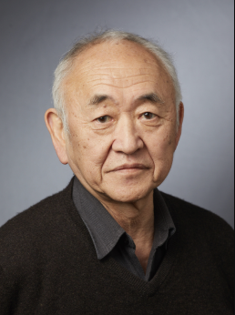

Yung-Chi Cheng
Henry Bronson Professor of Pharmacology
Department of Pharmacology, Yale School of Medicine
Chairman, Consortium for the Globalization of Chinese Medicine (CGCM)
Research Focus
Dr. Cheng's laboratory studies and develops novel anti-cancer and anti-viral drugs, with programs spanning hepatocellular carcinoma, pancreatic cancer, colorectal cancer, and melanoma in oncology, and HBV, HCV, HIV, EBV, and CMV in virology. His lab currently applies systems biology approaches to developing multi-targeted medicines for cancer and other aging-related diseases. He has championed the vision of WE Medicine — a convergence of Western reductionist pharmacology and Eastern multi-target, polychemical herbal medicine — building the Consortium for the Globalization of Chinese Medicine with partners across Asia. His lab works extensively with plant extracts and complex herbal mixtures, evaluating their pharmacological activity against disease-relevant targets in cancer and chronic inflammatory conditions.
Role in My Training
Dr. Cheng provides primary mentorship in multi-target herbal pharmacology, systems biology approaches to complex mixture evaluation, and the strategic interpretation of polypharmacological herbal interventions in disease.